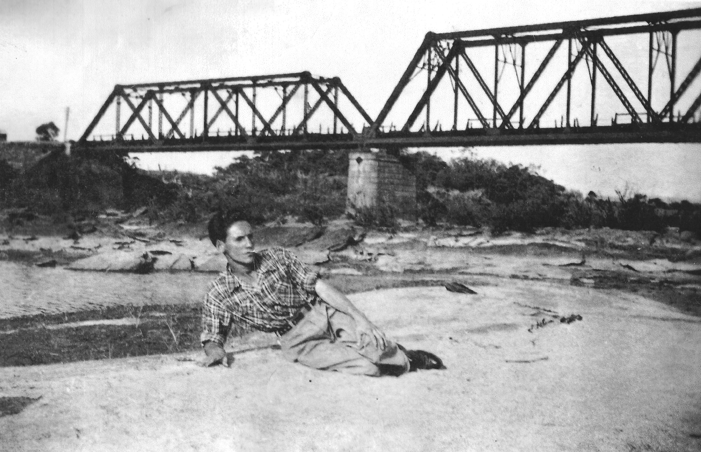
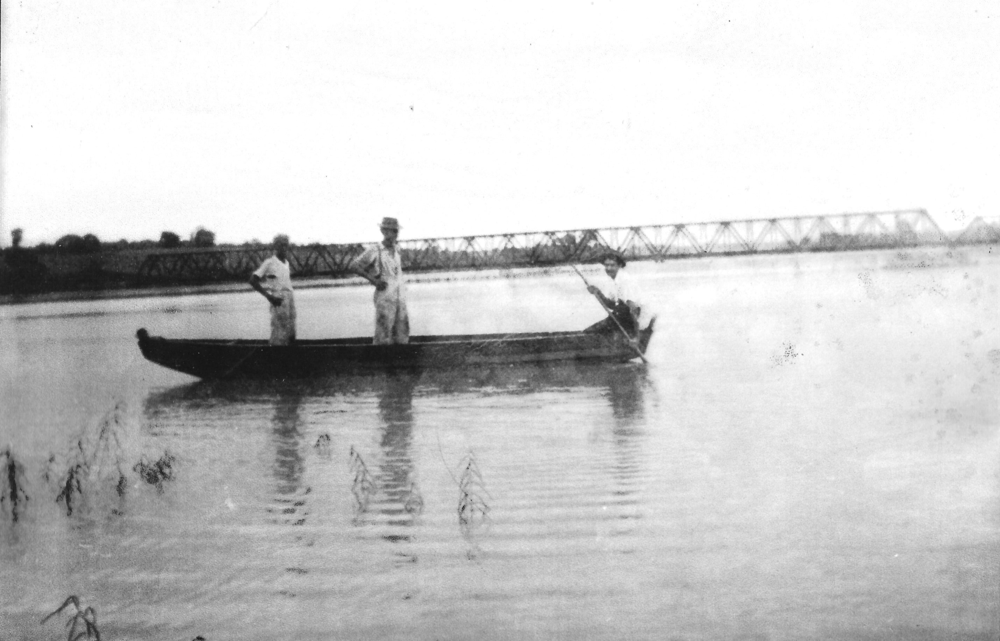
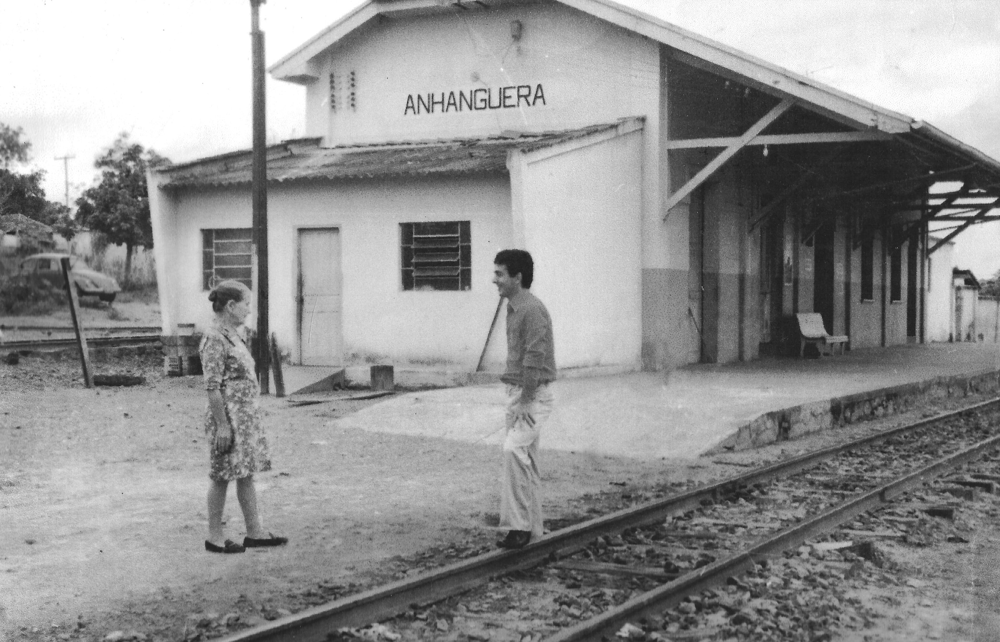
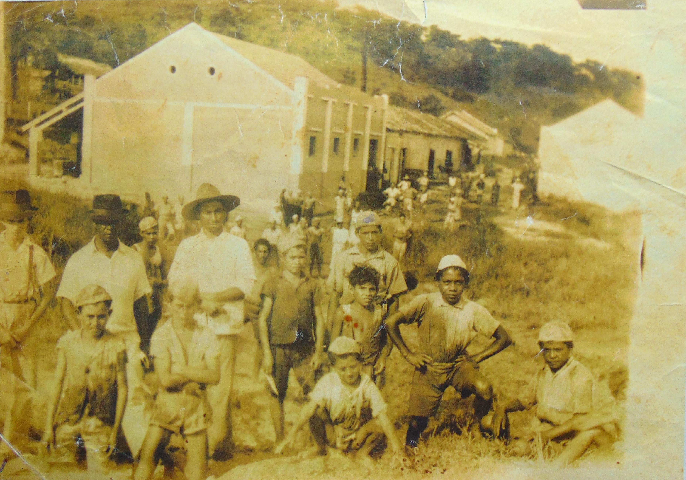
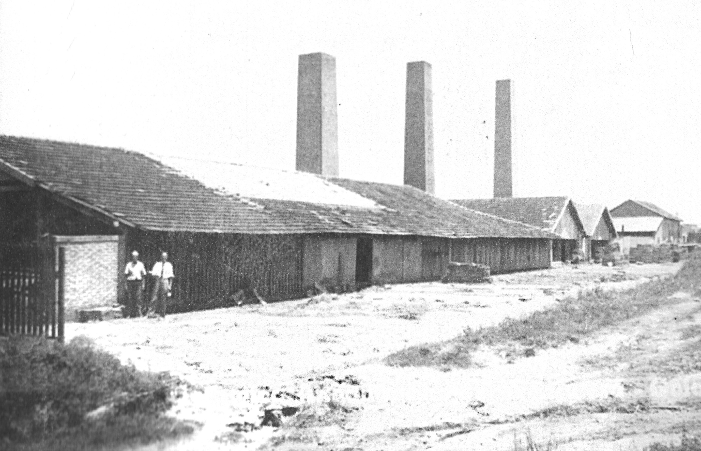
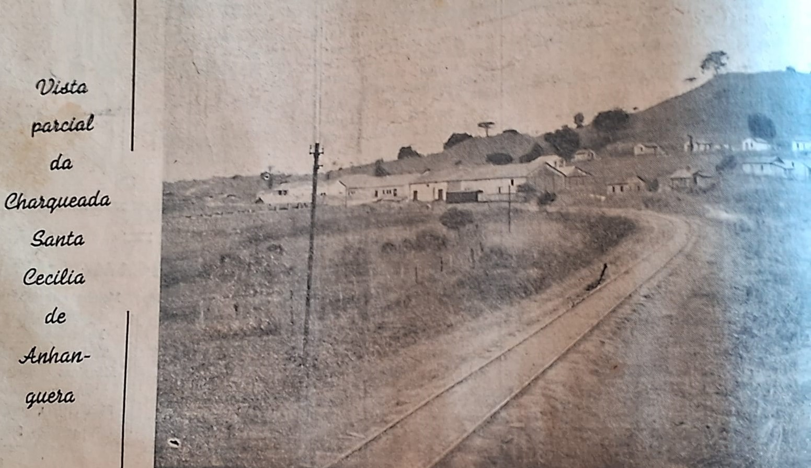
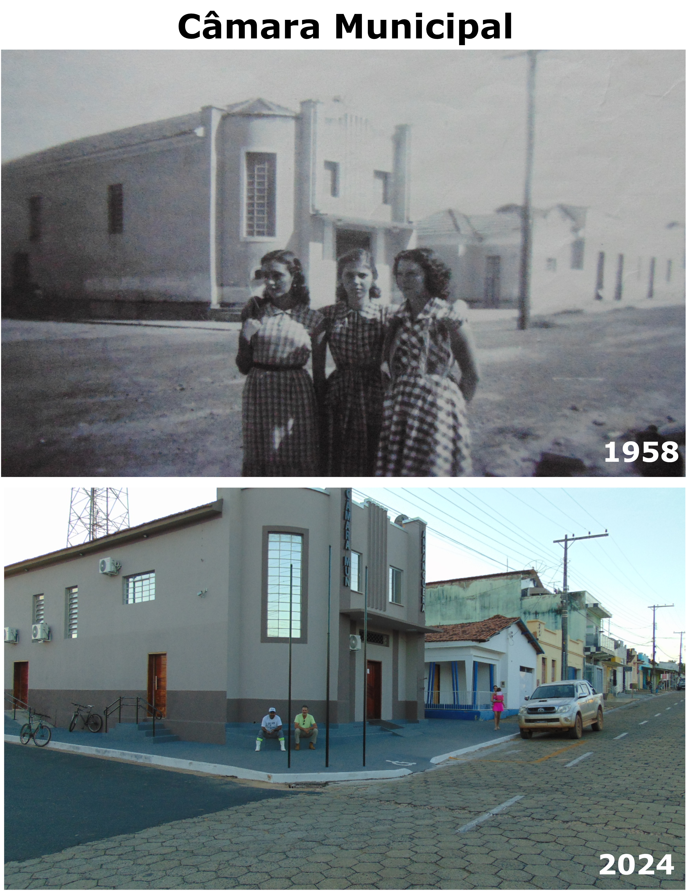
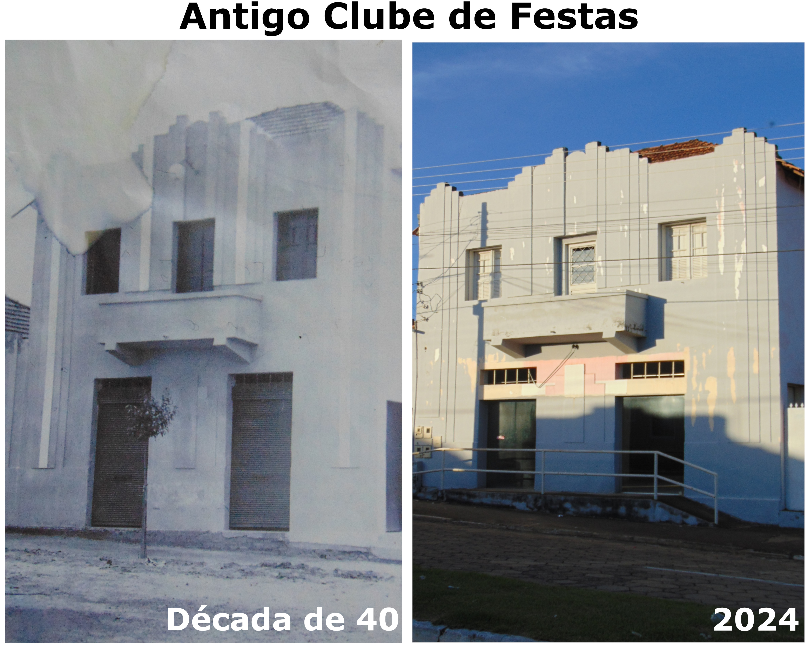
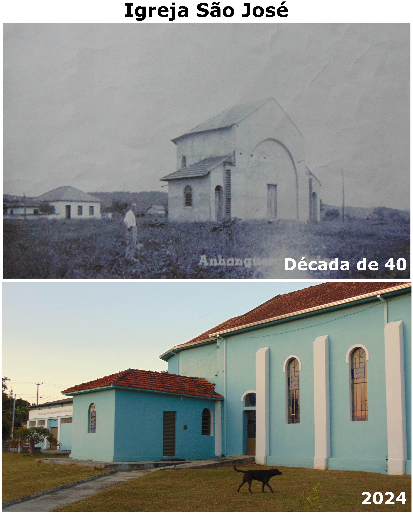

Galeria de Fotos de Anhanguera
O conteúdo desta página consiste em uma série de fotografias que mostram diversos locais, tradições e demais aspectos que marcaram e ainda marcam a história de nossa querida Anhanguera.
A galeria é organizada em seções, sendo cada uma delas referente a um aspecto relevante para a história municipal. Para acessar as demais imagens disponíveis sobre cada uma das seções, basta clicar nos botões destacados conforme o exemplo a seguir: Exemplo
O Km 53 da Estrada de Ferro Goyaz



Comércio em grande escala: a Cerâmica Anhanguera e a Charqueada Santa Cecília



Art Déco: O Antes e o Depois de Algumas Contruções Marcantes da Arquitetura Anhanguerina


